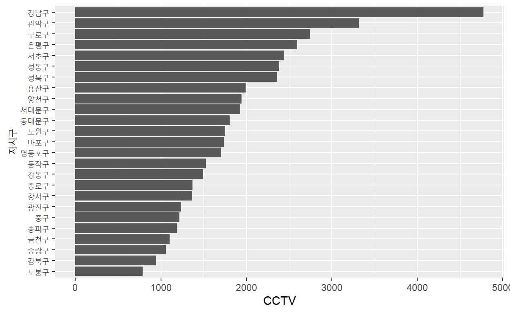
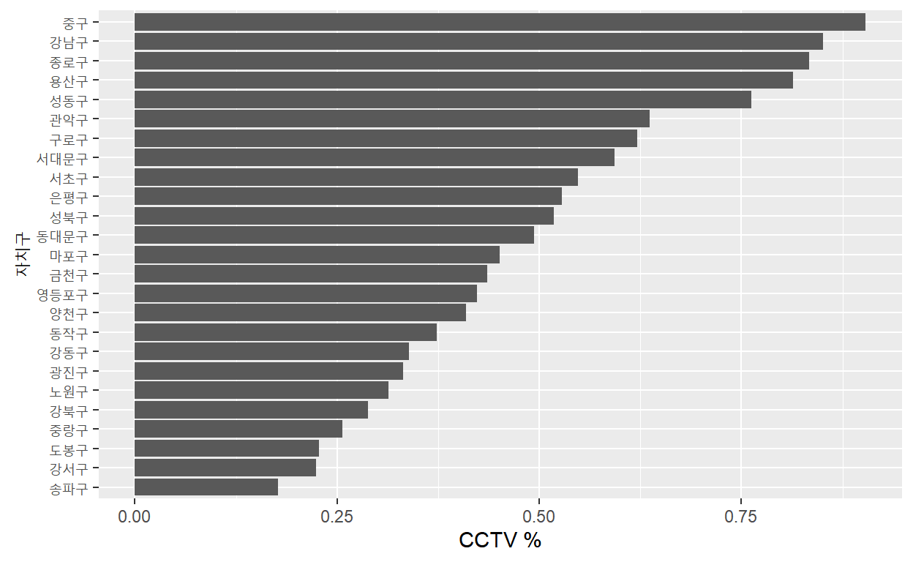
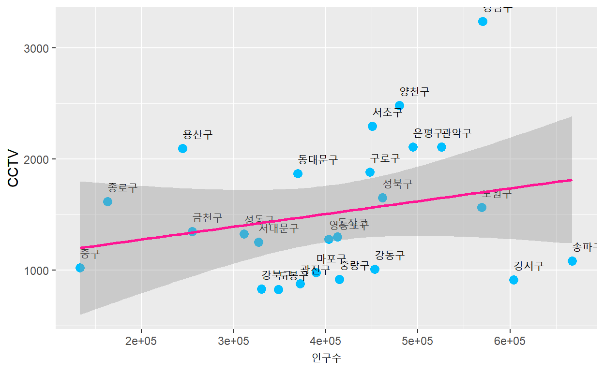
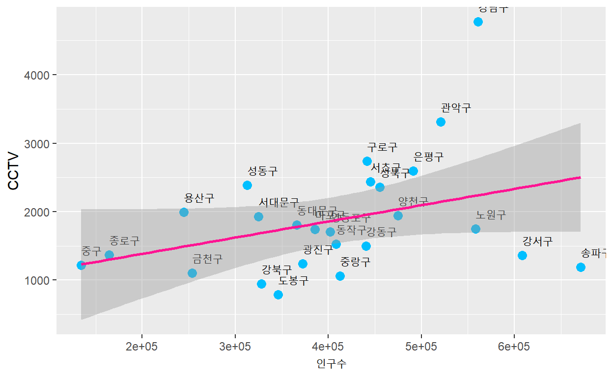
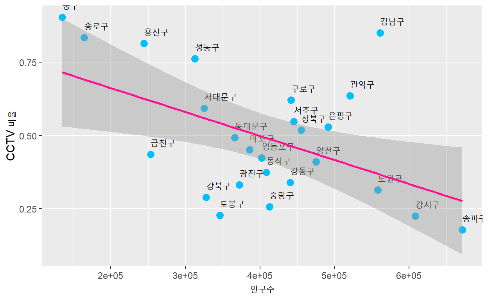

서울시 25개 자치구의 CCTV 현황에 대해 탐색하고자 합니다.
분석에 사용한 데이터는 다음과 같습니다.
library(tidyverse)
library(readxl)서울시 각 자치구별 CCTV 설치현황이 들어 있는 데이터 파일을 불러옵니다.
cctv_seoul <- read.csv("data/seoul_cctv_b2011_2018.csv", stringsAsFactors = FALSE)
str(cctv_seoul)
'data.frame': 25 obs. of 10 variables:
$ 기관명 : chr "강 남 구" "강 동 구" "강 북 구" "강 서 구" ...
$ 소계 : int 5221 1879 1265 1617 3985 1581 3227 1634 1906 858 ...
$ X2011년이전: int 1944 303 243 219 430 470 852 27 481 197 ...
$ X2012년 : int 195 387 88 155 56 42 219 17 117 66 ...
$ X2013년 : int 316 134 141 118 419 83 349 242 203 8 ...
$ X2014년 : int 430 59 74 230 487 87 187 101 80 185 ...
$ X2015년 : int 546 144 145 187 609 64 268 382 461 59 ...
$ X2016년 : int 765 194 254 190 619 21 326 136 298 155 ...
$ X2017년 : int 577 273 1 264 694 468 540 199 110 117 ...
$ X2018년 : int 448 385 319 254 671 346 486 530 156 71 ...데이터의 열 이름(변수명)은 영문으로 되어 있는 것이 더 편리하기 때문에 rename 함수를 이용하여 변수명을 변경합니다.
# 열(column)이름(변수명) 변경하기, new name = old name
cctv_seoul <- cctv_seoul %>%
rename("gu" = "기관명",
"total" = "소계",
"before2011" = "X2011년이전",
"y2012" = "X2012년",
"y2013" = "X2013년",
"y2014" = "X2014년",
"y2015" = "X2015년",
"y2016" = "X2016년",
"y2017" = "X2017년",
"y2018" = "X2018년")
str(cctv_seoul)
'data.frame': 25 obs. of 10 variables:
$ gu : chr "강 남 구" "강 동 구" "강 북 구" "강 서 구" ...
$ total : int 5221 1879 1265 1617 3985 1581 3227 1634 1906 858 ...
$ before2011: int 1944 303 243 219 430 470 852 27 481 197 ...
$ y2012 : int 195 387 88 155 56 42 219 17 117 66 ...
$ y2013 : int 316 134 141 118 419 83 349 242 203 8 ...
$ y2014 : int 430 59 74 230 487 87 187 101 80 185 ...
$ y2015 : int 546 144 145 187 609 64 268 382 461 59 ...
$ y2016 : int 765 194 254 190 619 21 326 136 298 155 ...
$ y2017 : int 577 273 1 264 694 468 540 199 110 117 ...
$ y2018 : int 448 385 319 254 671 346 486 530 156 71 ...2017년을 기준으로 분석할 것이기 때문에 소계(total)에서 2018년 설치대수(y2018)를 빼어 새로운 변수를 만들고, total과 y2018 변수를 제거하고자 합니다.
# 2017년 기준 CCTV 설치누적대수 산출하기
cctv_seoul <- cctv_seoul %>%
mutate(total2017 = total - y2018) %>%
select(-c(total, y2018))
str(cctv_seoul)
'data.frame': 25 obs. of 9 variables:
$ gu : chr "강 남 구" "강 동 구" "강 북 구" "강 서 구" ...
$ before2011: int 1944 303 243 219 430 470 852 27 481 197 ...
$ y2012 : int 195 387 88 155 56 42 219 17 117 66 ...
$ y2013 : int 316 134 141 118 419 83 349 242 203 8 ...
$ y2014 : int 430 59 74 230 487 87 187 101 80 185 ...
$ y2015 : int 546 144 145 187 609 64 268 382 461 59 ...
$ y2016 : int 765 194 254 190 619 21 326 136 298 155 ...
$ y2017 : int 577 273 1 264 694 468 540 199 110 117 ...
$ total2017 : int 4773 1494 946 1363 3314 1235 2741 1104 1750 787 ...자치구 글자 사이에 공백이 있으므로 이를 제거하고자 한다.
cctv_seoul$gu <- str_replace_all(cctv_seoul$gu, " ", "")
cctv_seoul$gu
[1] "강남구" "강동구" "강북구" "강서구" "관악구" "광진구"
[7] "구로구" "금천구" "노원구" "도봉구" "동대문구" "동작구"
[13] "마포구" "서대문구" "서초구" "성동구" "성북구" "송파구"
[19] "양천구" "영등포구" "용산구" "은평구" "종로구" "중구"
[25] "중랑구" 서울시 CCTV 데이터의 특성을 간단하게 파악합니다.
summary(cctv_seoul)
gu before2011 y2012 y2013
Length:25 Min. : 8.0 Min. : 7.0 Min. : 8.0
Class :character 1st Qu.: 228.5 1st Qu.: 83.5 1st Qu.:106.5
Mode :character Median : 481.0 Median :108.0 Median :185.0
Mean : 580.5 Mean :123.8 Mean :194.2
3rd Qu.: 775.5 3rd Qu.:158.0 3rd Qu.:235.0
Max. :1944.0 Max. :387.0 Max. :599.0
NA's :2 NA's :2 NA's :2
y2014 y2015 y2016 y2017
Min. : 21.0 Min. : 59.0 Min. : 21.0 Min. : 1.0
1st Qu.: 87.0 1st Qu.:130.0 1st Qu.:155.0 1st Qu.:136.0
Median : 134.0 Median :180.0 Median :254.0 Median :273.0
Mean : 249.9 Mean :226.9 Mean :267.4 Mean :299.4
3rd Qu.: 241.0 3rd Qu.:268.0 3rd Qu.:326.0 3rd Qu.:372.0
Max. :1326.0 Max. :609.0 Max. :765.0 Max. :933.0
total2017
Min. : 787
1st Qu.:1235
Median :1740
Mean :1870
3rd Qu.:2360
Max. :4773
cctv_seoul %>%
arrange(total2017) # 오름차순 정렬
gu before2011 y2012 y2013 y2014 y2015 y2016 y2017 total2017
1 도봉구 197 66 8 185 59 155 117 787
2 강북구 243 88 141 74 145 254 1 946
3 중랑구 NA NA NA 770 102 121 66 1059
4 금천구 27 17 242 101 382 136 199 1104
5 송파구 600 99 88 21 166 100 116 1190
6 중구 25 165 114 80 245 270 317 1216
7 광진구 470 42 83 87 64 21 468 1235
8 강서구 219 155 118 230 187 190 264 1363
9 종로구 8 7 599 132 195 148 281 1370
10 강동구 303 387 134 59 144 194 273 1494
11 동작구 238 93 29 503 130 254 278 1525
12 영등포구 132 121 206 217 366 289 371 1702
13 마포구 585 108 69 70 177 359 372 1740
14 노원구 481 117 203 80 461 298 110 1750
15 동대문구 NA NA NA 1326 111 233 136 1806
16 서대문구 565 233 214 114 109 277 415 1927
17 양천구 772 161 185 169 172 349 137 1945
18 용산구 1279 152 201 107 102 89 60 1990
19 성북구 779 84 304 241 279 388 285 2360
20 성동구 665 109 118 101 258 201 933 2385
21 서초구 1172 91 228 134 215 352 247 2439
22 은평구 1365 83 99 343 180 296 229 2595
23 구로구 852 219 349 187 268 326 540 2741
24 관악구 430 56 419 487 609 619 694 3314
25 강남구 1944 195 316 430 546 765 577 4773CCTV 설치 대수가 가장 작은 5개 구는 도봉구, 강북구, 중랑구, 금천구, 송파구입니다.
cctv_seoul %>%
arrange(desc(total2017)) # 내림차순 정렬
gu before2011 y2012 y2013 y2014 y2015 y2016 y2017 total2017
1 강남구 1944 195 316 430 546 765 577 4773
2 관악구 430 56 419 487 609 619 694 3314
3 구로구 852 219 349 187 268 326 540 2741
4 은평구 1365 83 99 343 180 296 229 2595
5 서초구 1172 91 228 134 215 352 247 2439
6 성동구 665 109 118 101 258 201 933 2385
7 성북구 779 84 304 241 279 388 285 2360
8 용산구 1279 152 201 107 102 89 60 1990
9 양천구 772 161 185 169 172 349 137 1945
10 서대문구 565 233 214 114 109 277 415 1927
11 동대문구 NA NA NA 1326 111 233 136 1806
12 노원구 481 117 203 80 461 298 110 1750
13 마포구 585 108 69 70 177 359 372 1740
14 영등포구 132 121 206 217 366 289 371 1702
15 동작구 238 93 29 503 130 254 278 1525
16 강동구 303 387 134 59 144 194 273 1494
17 종로구 8 7 599 132 195 148 281 1370
18 강서구 219 155 118 230 187 190 264 1363
19 광진구 470 42 83 87 64 21 468 1235
20 중구 25 165 114 80 245 270 317 1216
21 송파구 600 99 88 21 166 100 116 1190
22 금천구 27 17 242 101 382 136 199 1104
23 중랑구 NA NA NA 770 102 121 66 1059
24 강북구 243 88 141 74 145 254 1 946
25 도봉구 197 66 8 185 59 155 117 787
# 서울시 CCTV 현황 그래프로 분석하기
cctv_seoul %>%
ggplot(aes(x = reorder(gu, total2017), y = total2017)) +
geom_bar(stat = "identity") +
coord_flip() +
xlab("자치구") +
ylab("CCTV")
CCTV 설치 대수가 가장 많은 5개 구는 강남구, 관악구, 구로구, 은평구, 서초구입니다.
최근 3년간 CCTV 증가율 변수를 추가하고자 합니다. 2015년~2017년을 합한 후 2014년도 이전으로 나누어 CCTV 증가율을 산출하겠습니다. 산출된 CCTV 증가율을 기준으로 정렬하여 CCTV 증가율이 가장 높은 자치구는 어디인지 살펴보겠습니다.
cctv_seoul <- cctv_seoul %>%
mutate_each(funs(replace(., which(is.na(.)), 0))) %>%
mutate(growth_rate = (y2015 + y2016 + y2017) /
(before2011 + y2012 + y2013 + y2014) * 100)
cctv_seoul %>%
arrange(desc(growth_rate))
gu before2011 y2012 y2013 y2014 y2015 y2016 y2017 total2017
1 중구 25 165 114 80 245 270 317 1216
2 금천구 27 17 242 101 382 136 199 1104
3 영등포구 132 121 206 217 366 289 371 1702
4 성동구 665 109 118 101 258 201 933 2385
5 관악구 430 56 419 487 609 619 694 3314
6 마포구 585 108 69 70 177 359 372 1740
7 노원구 481 117 203 80 461 298 110 1750
8 강서구 219 155 118 230 187 190 264 1363
9 종로구 8 7 599 132 195 148 281 1370
10 광진구 470 42 83 87 64 21 468 1235
11 동작구 238 93 29 503 130 254 278 1525
12 강북구 243 88 141 74 145 254 1 946
13 도봉구 197 66 8 185 59 155 117 787
14 서대문구 565 233 214 114 109 277 415 1927
15 구로구 852 219 349 187 268 326 540 2741
16 강동구 303 387 134 59 144 194 273 1494
17 성북구 779 84 304 241 279 388 285 2360
18 강남구 1944 195 316 430 546 765 577 4773
19 양천구 772 161 185 169 172 349 137 1945
20 서초구 1172 91 228 134 215 352 247 2439
21 송파구 600 99 88 21 166 100 116 1190
22 중랑구 0 0 0 770 102 121 66 1059
23 은평구 1365 83 99 343 180 296 229 2595
24 동대문구 0 0 0 1326 111 233 136 1806
25 용산구 1279 152 201 107 102 89 60 1990
growth_rate
1 216.66667
2 185.27132
3 151.77515
4 140.18127
5 138.07471
6 109.13462
7 98.63791
8 88.78116
9 83.64611
10 81.08504
11 76.70915
12 73.26007
13 72.58772
14 71.13677
15 70.56627
16 69.19592
17 67.61364
18 65.44194
19 51.12665
20 50.09231
21 47.27723
22 37.53247
23 37.30159
24 36.19910
25 14.43358분석결과, 최근 3년간 CCTV 증가율이 가장 높은 5개 구는 중구, 금천구, 영등포구, 성동구, 관악구입니다.
pop_seoul <- read.csv("data/seoul_pop_1992_2018.csv", stringsAsFactors = FALSE)
str(pop_seoul)
'data.frame': 693 obs. of 16 variables:
$ 연도 : int 1992 1992 1992 1992 1992 1992 1992 1992 1992 1992 ...
$ 자치구 : chr "합계" "종로구" "중구" "용산구" ...
$ 세대 : int 3383169 75752 59667 96832 244888 149094 136876 163995 229923 174005 ...
$ 인구 : int 10969862 227988 176836 287124 780526 470594 458391 527296 766799 571833 ...
$ 남자 : int 5519096 114648 89537 144600 397121 238385 230937 266530 385385 284049 ...
$ 여자 : int 5450766 113340 87299 142524 383405 232209 227454 260766 381414 287784 ...
$ 한국인 : int 10935230 226240 174605 280671 778385 469843 458109 525943 765975 571171 ...
$ 한국인남자: int 5500001 113677 88268 140424 395977 237979 230799 265830 385011 283705 ...
$ 한국인여자: int 5435229 112563 86337 140247 382408 231864 227310 260113 380964 287466 ...
$ 외국인 : int 34632 1748 2231 6453 2141 751 282 1353 824 662 ...
$ 외국인남자: int 19095 971 1269 4176 1144 406 138 700 374 344 ...
$ 외국인여자: int 15537 777 962 2277 997 345 144 653 450 318 ...
$ 인구밀도 : chr "18121" "9496" "17701" "13135" ...
$ 면적 : chr "605.36" "24.01" "9.99" "21.86" ...
$ 세대당인구: num 3.24 3.01 2.96 2.97 3.19 3.16 3.35 3.22 3.34 3.29 ...
$ 고령자 : int 434348 12096 8857 13957 28493 19142 15849 23020 29689 24345 ...2017년도 기준으로 분석할 것이기 때문에 2017년도 데이터만 추출합니다. 또한 변수도 자치구, 인구, 한국인, 외국인, 고령자만 추출합니다.
pop_seoul <- pop_seoul %>%
filter(연도 == 2017) %>%
select(자치구, 인구, 한국인, 외국인, 고령자)데이터의 열 이름(변수명)을 변경합니다.
# 변수명 변경하기
pop_seoul <- pop_seoul %>%
rename("gu" = "자치구",
"pop" = "인구",
"korean" = "한국인",
"foreign" = "외국인",
"aged" = "고령자")
pop_seoul
gu pop korean foreign aged
1 합계 10124579 9857426 267153 1365126
2 종로구 164257 154770 9487 26182
3 중구 134593 125709 8884 21384
4 용산구 244444 229161 15283 36882
5 성동구 312711 304808 7903 41273
6 광진구 372298 357703 14595 43953
7 동대문구 366011 350647 15364 55718
8 중랑구 412780 408226 4554 59262
9 성북구 455407 444055 11352 66251
10 강북구 328002 324479 3523 56530
11 도봉구 346234 344166 2068 53488
12 노원구 558075 554403 3672 74243
13 은평구 491202 486794 4408 74559
14 서대문구 325028 312800 12228 49266
15 마포구 385783 374915 10868 49615
16 양천구 475018 471154 3864 55234
17 강서구 608255 601691 6564 76032
18 구로구 441559 410742 30817 58794
19 금천구 253491 235154 18337 34170
20 영등포구 402024 368550 33474 53981
21 동작구 408493 396217 12276 57255
22 관악구 520929 503297 17632 70046
23 서초구 445401 441102 4299 53205
24 강남구 561052 556164 4888 65060
25 송파구 671173 664496 6677 76582
26 강동구 440359 436223 4136 56161합계 데이터는 불필요하기 때문에 합계가 입력되어 있는 첫번째 행을 삭제합니다.
# 첫번째 행(합계) 삭제하기
pop_seoul <- pop_seoul[-1,]외국인 비율(foreign_percent)과 고령자 비율(aged_percent)을 계산하여 새로운 변수로 만듭니다.
# 외국인 비율과 고령자 비율 변수 생성
pop_seoul %>%
mutate(foreign_percent = foreign / pop * 100,
aged_percent = aged /pop * 100) -> pop_seoul
pop_seoul
gu pop korean foreign aged foreign_percent aged_percent
1 종로구 164257 154770 9487 26182 5.7757051 15.93966
2 중구 134593 125709 8884 21384 6.6006404 15.88790
3 용산구 244444 229161 15283 36882 6.2521477 15.08812
4 성동구 312711 304808 7903 41273 2.5272536 13.19845
5 광진구 372298 357703 14595 43953 3.9202467 11.80587
6 동대문구 366011 350647 15364 55718 4.1976880 15.22304
7 중랑구 412780 408226 4554 59262 1.1032511 14.35680
8 성북구 455407 444055 11352 66251 2.4927153 14.54765
9 강북구 328002 324479 3523 56530 1.0740788 17.23465
10 도봉구 346234 344166 2068 53488 0.5972839 15.44851
11 노원구 558075 554403 3672 74243 0.6579761 13.30341
12 은평구 491202 486794 4408 74559 0.8973905 15.17889
13 서대문구 325028 312800 12228 49266 3.7621374 15.15746
14 마포구 385783 374915 10868 49615 2.8171278 12.86086
15 양천구 475018 471154 3864 55234 0.8134429 11.62777
16 강서구 608255 601691 6564 76032 1.0791527 12.50002
17 구로구 441559 410742 30817 58794 6.9791353 13.31509
18 금천구 253491 235154 18337 34170 7.2337874 13.47977
19 영등포구 402024 368550 33474 53981 8.3263686 13.42731
20 동작구 408493 396217 12276 57255 3.0051923 14.01615
21 관악구 520929 503297 17632 70046 3.3847223 13.44636
22 서초구 445401 441102 4299 53205 0.9651977 11.94542
23 강남구 561052 556164 4888 65060 0.8712205 11.59607
24 송파구 671173 664496 6677 76582 0.9948255 11.41017
25 강동구 440359 436223 4136 56161 0.9392337 12.75346
# 인구수 기준으로 정렬
pop_seoul %>%
arrange(desc(pop))
gu pop korean foreign aged foreign_percent aged_percent
1 송파구 671173 664496 6677 76582 0.9948255 11.41017
2 강서구 608255 601691 6564 76032 1.0791527 12.50002
3 강남구 561052 556164 4888 65060 0.8712205 11.59607
4 노원구 558075 554403 3672 74243 0.6579761 13.30341
5 관악구 520929 503297 17632 70046 3.3847223 13.44636
6 은평구 491202 486794 4408 74559 0.8973905 15.17889
7 양천구 475018 471154 3864 55234 0.8134429 11.62777
8 성북구 455407 444055 11352 66251 2.4927153 14.54765
9 서초구 445401 441102 4299 53205 0.9651977 11.94542
10 구로구 441559 410742 30817 58794 6.9791353 13.31509
11 강동구 440359 436223 4136 56161 0.9392337 12.75346
12 중랑구 412780 408226 4554 59262 1.1032511 14.35680
13 동작구 408493 396217 12276 57255 3.0051923 14.01615
14 영등포구 402024 368550 33474 53981 8.3263686 13.42731
15 마포구 385783 374915 10868 49615 2.8171278 12.86086
16 광진구 372298 357703 14595 43953 3.9202467 11.80587
17 동대문구 366011 350647 15364 55718 4.1976880 15.22304
18 도봉구 346234 344166 2068 53488 0.5972839 15.44851
19 강북구 328002 324479 3523 56530 1.0740788 17.23465
20 서대문구 325028 312800 12228 49266 3.7621374 15.15746
21 성동구 312711 304808 7903 41273 2.5272536 13.19845
22 금천구 253491 235154 18337 34170 7.2337874 13.47977
23 용산구 244444 229161 15283 36882 6.2521477 15.08812
24 종로구 164257 154770 9487 26182 5.7757051 15.93966
25 중구 134593 125709 8884 21384 6.6006404 15.88790인구 수 기준으로 정렬한 결과 송파구, 강서구, 강남구, 노원구, 관악구 순으로 인구가 많은 것으로 나타납니다.
# 외국인 기준으로 정렬
pop_seoul %>%
arrange(desc(foreign))
gu pop korean foreign aged foreign_percent aged_percent
1 영등포구 402024 368550 33474 53981 8.3263686 13.42731
2 구로구 441559 410742 30817 58794 6.9791353 13.31509
3 금천구 253491 235154 18337 34170 7.2337874 13.47977
4 관악구 520929 503297 17632 70046 3.3847223 13.44636
5 동대문구 366011 350647 15364 55718 4.1976880 15.22304
6 용산구 244444 229161 15283 36882 6.2521477 15.08812
7 광진구 372298 357703 14595 43953 3.9202467 11.80587
8 동작구 408493 396217 12276 57255 3.0051923 14.01615
9 서대문구 325028 312800 12228 49266 3.7621374 15.15746
10 성북구 455407 444055 11352 66251 2.4927153 14.54765
11 마포구 385783 374915 10868 49615 2.8171278 12.86086
12 종로구 164257 154770 9487 26182 5.7757051 15.93966
13 중구 134593 125709 8884 21384 6.6006404 15.88790
14 성동구 312711 304808 7903 41273 2.5272536 13.19845
15 송파구 671173 664496 6677 76582 0.9948255 11.41017
16 강서구 608255 601691 6564 76032 1.0791527 12.50002
17 강남구 561052 556164 4888 65060 0.8712205 11.59607
18 중랑구 412780 408226 4554 59262 1.1032511 14.35680
19 은평구 491202 486794 4408 74559 0.8973905 15.17889
20 서초구 445401 441102 4299 53205 0.9651977 11.94542
21 강동구 440359 436223 4136 56161 0.9392337 12.75346
22 양천구 475018 471154 3864 55234 0.8134429 11.62777
23 노원구 558075 554403 3672 74243 0.6579761 13.30341
24 강북구 328002 324479 3523 56530 1.0740788 17.23465
25 도봉구 346234 344166 2068 53488 0.5972839 15.44851
# 외국인 비율 기준으로 정렬
pop_seoul %>%
arrange(desc(foreign_percent))
gu pop korean foreign aged foreign_percent aged_percent
1 영등포구 402024 368550 33474 53981 8.3263686 13.42731
2 금천구 253491 235154 18337 34170 7.2337874 13.47977
3 구로구 441559 410742 30817 58794 6.9791353 13.31509
4 중구 134593 125709 8884 21384 6.6006404 15.88790
5 용산구 244444 229161 15283 36882 6.2521477 15.08812
6 종로구 164257 154770 9487 26182 5.7757051 15.93966
7 동대문구 366011 350647 15364 55718 4.1976880 15.22304
8 광진구 372298 357703 14595 43953 3.9202467 11.80587
9 서대문구 325028 312800 12228 49266 3.7621374 15.15746
10 관악구 520929 503297 17632 70046 3.3847223 13.44636
11 동작구 408493 396217 12276 57255 3.0051923 14.01615
12 마포구 385783 374915 10868 49615 2.8171278 12.86086
13 성동구 312711 304808 7903 41273 2.5272536 13.19845
14 성북구 455407 444055 11352 66251 2.4927153 14.54765
15 중랑구 412780 408226 4554 59262 1.1032511 14.35680
16 강서구 608255 601691 6564 76032 1.0791527 12.50002
17 강북구 328002 324479 3523 56530 1.0740788 17.23465
18 송파구 671173 664496 6677 76582 0.9948255 11.41017
19 서초구 445401 441102 4299 53205 0.9651977 11.94542
20 강동구 440359 436223 4136 56161 0.9392337 12.75346
21 은평구 491202 486794 4408 74559 0.8973905 15.17889
22 강남구 561052 556164 4888 65060 0.8712205 11.59607
23 양천구 475018 471154 3864 55234 0.8134429 11.62777
24 노원구 558075 554403 3672 74243 0.6579761 13.30341
25 도봉구 346234 344166 2068 53488 0.5972839 15.44851외국인이 많은 구는 영등포구, 구로구, 금천구 등이며 외국인 비율이 높은 구는 영등포구, 금천구, 구로구 순입니다.
# 고령자 기준으로 정렬
pop_seoul %>%
arrange(desc(aged))
gu pop korean foreign aged foreign_percent aged_percent
1 송파구 671173 664496 6677 76582 0.9948255 11.41017
2 강서구 608255 601691 6564 76032 1.0791527 12.50002
3 은평구 491202 486794 4408 74559 0.8973905 15.17889
4 노원구 558075 554403 3672 74243 0.6579761 13.30341
5 관악구 520929 503297 17632 70046 3.3847223 13.44636
6 성북구 455407 444055 11352 66251 2.4927153 14.54765
7 강남구 561052 556164 4888 65060 0.8712205 11.59607
8 중랑구 412780 408226 4554 59262 1.1032511 14.35680
9 구로구 441559 410742 30817 58794 6.9791353 13.31509
10 동작구 408493 396217 12276 57255 3.0051923 14.01615
11 강북구 328002 324479 3523 56530 1.0740788 17.23465
12 강동구 440359 436223 4136 56161 0.9392337 12.75346
13 동대문구 366011 350647 15364 55718 4.1976880 15.22304
14 양천구 475018 471154 3864 55234 0.8134429 11.62777
15 영등포구 402024 368550 33474 53981 8.3263686 13.42731
16 도봉구 346234 344166 2068 53488 0.5972839 15.44851
17 서초구 445401 441102 4299 53205 0.9651977 11.94542
18 마포구 385783 374915 10868 49615 2.8171278 12.86086
19 서대문구 325028 312800 12228 49266 3.7621374 15.15746
20 광진구 372298 357703 14595 43953 3.9202467 11.80587
21 성동구 312711 304808 7903 41273 2.5272536 13.19845
22 용산구 244444 229161 15283 36882 6.2521477 15.08812
23 금천구 253491 235154 18337 34170 7.2337874 13.47977
24 종로구 164257 154770 9487 26182 5.7757051 15.93966
25 중구 134593 125709 8884 21384 6.6006404 15.88790
# 고령자 비율 기준으로 정렬
pop_seoul %>%
arrange(desc(aged_percent))
gu pop korean foreign aged foreign_percent aged_percent
1 강북구 328002 324479 3523 56530 1.0740788 17.23465
2 종로구 164257 154770 9487 26182 5.7757051 15.93966
3 중구 134593 125709 8884 21384 6.6006404 15.88790
4 도봉구 346234 344166 2068 53488 0.5972839 15.44851
5 동대문구 366011 350647 15364 55718 4.1976880 15.22304
6 은평구 491202 486794 4408 74559 0.8973905 15.17889
7 서대문구 325028 312800 12228 49266 3.7621374 15.15746
8 용산구 244444 229161 15283 36882 6.2521477 15.08812
9 성북구 455407 444055 11352 66251 2.4927153 14.54765
10 중랑구 412780 408226 4554 59262 1.1032511 14.35680
11 동작구 408493 396217 12276 57255 3.0051923 14.01615
12 금천구 253491 235154 18337 34170 7.2337874 13.47977
13 관악구 520929 503297 17632 70046 3.3847223 13.44636
14 영등포구 402024 368550 33474 53981 8.3263686 13.42731
15 구로구 441559 410742 30817 58794 6.9791353 13.31509
16 노원구 558075 554403 3672 74243 0.6579761 13.30341
17 성동구 312711 304808 7903 41273 2.5272536 13.19845
18 마포구 385783 374915 10868 49615 2.8171278 12.86086
19 강동구 440359 436223 4136 56161 0.9392337 12.75346
20 강서구 608255 601691 6564 76032 1.0791527 12.50002
21 서초구 445401 441102 4299 53205 0.9651977 11.94542
22 광진구 372298 357703 14595 43953 3.9202467 11.80587
23 양천구 475018 471154 3864 55234 0.8134429 11.62777
24 강남구 561052 556164 4888 65060 0.8712205 11.59607
25 송파구 671173 664496 6677 76582 0.9948255 11.41017고령자가 많은 구는 송파구, 강서구, 은평구 순이며 고령자 비율이 높은 구는 강북구, 종로구, 중구 순입니다.
# 두 데이터 공통 변수인 구별(gu) 변수를 기준으로 병합(merge)
cctv_pop_seoul <- cctv_seoul %>% inner_join(pop_seoul, by = "gu")
str(cctv_pop_seoul)
'data.frame': 25 obs. of 16 variables:
$ gu : chr "강남구" "강동구" "강북구" "강서구" ...
$ before2011 : num 1944 303 243 219 430 ...
$ y2012 : num 195 387 88 155 56 42 219 17 117 66 ...
$ y2013 : num 316 134 141 118 419 83 349 242 203 8 ...
$ y2014 : num 430 59 74 230 487 87 187 101 80 185 ...
$ y2015 : num 546 144 145 187 609 64 268 382 461 59 ...
$ y2016 : num 765 194 254 190 619 21 326 136 298 155 ...
$ y2017 : num 577 273 1 264 694 468 540 199 110 117 ...
$ total2017 : num 4773 1494 946 1363 3314 ...
$ growth_rate : num 65.4 69.2 73.3 88.8 138.1 ...
$ pop : int 561052 440359 328002 608255 520929 372298 441559 253491 558075 346234 ...
$ korean : int 556164 436223 324479 601691 503297 357703 410742 235154 554403 344166 ...
$ foreign : int 4888 4136 3523 6564 17632 14595 30817 18337 3672 2068 ...
$ aged : int 65060 56161 56530 76032 70046 43953 58794 34170 74243 53488 ...
$ foreign_percent: num 0.871 0.939 1.074 1.079 3.385 ...
$ aged_percent : num 11.6 12.8 17.2 12.5 13.4 ...필요없는 4개 변수(before2011, y2012 ~ y2017)를 제거합니다.
# 필요없는 열(변수) 제거하기
cctv_pop_seoul <- cctv_pop_seoul %>%
select(-c(before2011, y2012, y2013, y2014, y2015, y2016, y2017))CCTV 대수를 인구로 나눈 CCTV 비율 변수(cctv_percent)를 추가로 만듭니다.
# CCTV 비율 변수 만들기
cctv_pop_seoul <- cctv_pop_seoul %>%
mutate(cctv_percent = total2017 / pop * 100)새로 만든 CCTV 비율을 기준으로 정렬하여 그래프를 만들면 다음과 같습니다. CCTV 비율 기준으로 보면 중구, 강남구, 종로구, 용산구, 성동구가 높게 나옵니다.
cctv_pop_seoul %>%
ggplot(aes(x = reorder(gu, cctv_percent), y = cctv_percent)) +
geom_bar(stat = "identity") +
coord_flip() +
xlab("자치구") +
ylab("CCTV %")
# 인구와 CCTV 설치대수의 상관관계 분석
cor.test(cctv_pop_seoul$pop, cctv_pop_seoul$total2017)
Pearson's product-moment correlation
data: cctv_pop_seoul$pop and cctv_pop_seoul$total2017
t = 1.8084, df = 23, p-value = 0.08365
alternative hypothesis: true correlation is not equal to 0
95 percent confidence interval:
-0.04916648 0.65643612
sample estimates:
cor
0.3528187 p-값이 0.05보다 크므로 95% 신뢰수준에서 인구와 CCTV 개수의 상관관계는 없다고 판단할 수 있습니다. 상관계수는 0.35로 상관관계가 있다고 하더라도 낮은 수준입니다.
산점도를 보면 오른쪽 하단의 3개 점(노원구, 강서구, 송파구)으로 인해 상관관계가 낮게 나오는 것으로 보입니다. 이 3개 구가 인구 수에 비해 CCTV 설치대수가 상대적으로 적다고 볼 수 있습니다.
# 인구와 CCTV 설치대수의 산점도
cctv_pop_seoul %>%
ggplot(aes(pop, total2017)) +
geom_point()
cor.test(cctv_pop_seoul$aged_percent, cctv_pop_seoul$total2017)
Pearson's product-moment correlation
data: cctv_pop_seoul$aged_percent and cctv_pop_seoul$total2017
t = -1.683, df = 23, p-value = 0.1059
alternative hypothesis: true correlation is not equal to 0
95 percent confidence interval:
-0.64223796 0.07362443
sample estimates:
cor
-0.3311397 p-값이 0.05보다 크므로 95% 신뢰수준에서 고령자 비율과 CCTV 개수의 상관관계는 없다고 판단할 수 있습니다.
cor.test(cctv_pop_seoul$foreign_percent, cctv_pop_seoul$total2017)
Pearson's product-moment correlation
data: cctv_pop_seoul$foreign_percent and cctv_pop_seoul$total2017
t = -0.40161, df = 23, p-value = 0.6917
alternative hypothesis: true correlation is not equal to 0
95 percent confidence interval:
-0.4633042 0.3223085
sample estimates:
cor
-0.08345013 p-값이 0.05보다 크므로 95% 신뢰수준에서 외국인 비율과 CCTV 개수의 상관관계는 없다고 판단할 수 있습니다.
cctv_pop_seoul %>%
ggplot(aes(pop, total2017)) +
geom_point(color = "deepskyblue", size = 3) +
geom_text(aes(label = gu, vjust = -1, hjust = 0)) +
geom_smooth(method = lm, color = "deeppink") +
labs(x = "인구수", y = "CCTV")
자치구의 인구와 CCTV 개수의 일반적인 경향을 추정하기 위해 회귀선(핑크색 직선)을 그렸습니다. 회귀선 보다 위에 있는 자치구는 상대적으로 CCTV가 많이 설치된 자치구이고, 반대로 아래에 있는 자치구는 상대적으로 CCTV가 적에 설치된 자치구입니다. 강남구, 관악구, 구로구 등은 일반적인 경향보다 더 많이 설치된 자치구입니다. 강북구, 도봉구, 송파구, 강서구, 중랑구 등은 일반적인 경향보다 더 적게 설치된 자치구라 할 수 있습니다.
만일 노원구, 강서구, 송파구가 더 많은 CCTV를 설치한다면 회귀선과 상관관계는 많이 달라질 것으로 보입니다.
cctv_pop_seoul %>%
ggplot(aes(pop, cctv_percent)) +
geom_point(color = "deepskyblue", size = 3) +
geom_text(aes(label = gu, vjust = -1, hjust = 0)) +
geom_smooth(method = lm, color = "deeppink") +
labs(x = "인구수", y = "CCTV 비율")
참고로 자치구 인구와 CCTV 비율의 산점도와 회귀선을 그려 살펴본 결과 강남구, 관악구 등이 일반적인 경향보다 더 높은 것으로 나타납니다.
참고 : 민형기(2017)의 ’파이썬으로 데이터 주무르기’를 참고하여 R 언어로 분석
If you see mistakes or want to suggest changes, please create an issue on the source repository.
Text and figures are licensed under Creative Commons Attribution CC BY 4.0. Source code is available at https://github.com/manboha/manboha.github.io, unless otherwise noted. The figures that have been reused from other sources don't fall under this license and can be recognized by a note in their caption: "Figure from ...".
For attribution, please cite this work as
Maeng (2019, July 7). Mblog for Data Analysis: CCTV Surveillance Cameras in Seoul. Retrieved from https://manboha.github.io/posts/2019-07-04-cctv-surveillance-cameras-in-seoul/
BibTeX citation
@misc{maeng2019cctv,
author = {Maeng, Bohak},
title = {Mblog for Data Analysis: CCTV Surveillance Cameras in Seoul},
url = {https://manboha.github.io/posts/2019-07-04-cctv-surveillance-cameras-in-seoul/},
year = {2019}
}